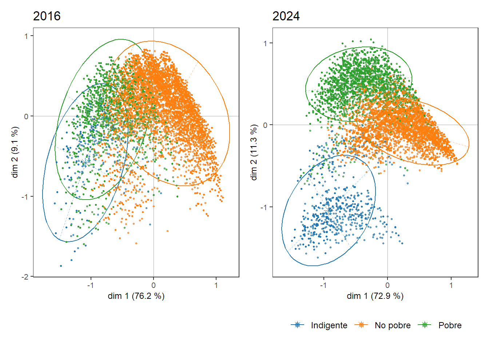

Introducción
La discusión acerca de la pobreza como concepto para evaluar en qué medida una sociedad garantiza determinados umbrales de bienestar tiene implicancias tanto en el ámbito público-político como académico (Arakaki, 2018; Born, 2014; Fernández y González, 2019; Salvia et al., 2017; Zack et al., 2020). No es lo mismo medir necesidades básicas insatisfechas, canastas básicas alimentarias, líneas de pobreza relativa, índices multidimensionales o disponibilidad de dinero en dólares de paridad de poder adquisitivo (PPA). Cada constructo ilumina distintos aspectos de las carencias, siendo algunos más o menos exigentes, más o menos comparables entre países y en el tiempo. Sin embargo, independientemente del cálculo que se realice, hay un hecho que es insoslayable: en los últimos años la pobreza en la Argentina ha ido en aumento y las recientes crisis sociales y económicas son explicativas de ello (Benza et al., 2022).
La medición oficial de la pobreza en Argentina comenzó a realizarse a partir de los años 80’, bajo el enfoque directo de las necesidades básicas insatisfechas (NBI). La medición por ingresos (por la línea de pobreza e indigencia), que es la que ocupa centralidad hoy en día, comenzó a realizarse a nivel de los principales aglomerados del país, a inicios de los años 90 a través de la Encuesta Permanente de Hogares (EPH) del Instituto Nacional de Estadísticas y Censos (INDEC), más allá de algunas experiencias puntuales realizadas en años previos a nivel de Gran Buenos Aires.
A los fines de contar con un índice comparable en el tiempo, en este trabajo nos centraremos en el análisis de la evolución de la pobreza en los últimos 9 años. De este modo realizamos un breve repaso de los principales hitos económico-sociales que han ocurrido en el país.
Los cambios en la política económica acontecidos a partir de 2016 bajo el gobierno de Macri, y profundizados por la crisis financiera de 2018, produjeron un primer incremento importante en la tasa de pobreza por ingresos. La caída del salario mínimo, vital y móvil y de los ingresos reales, el aumento de la desocupación, el estancamiento del trabajo registrado y el aumento de la inflación, son algunos de los factores que explican el aumento de la pobreza desde el 30,3% en 2016 al 35,5% en 2019.
A finales de 2019 se produce un cambio en el signo político del gobierno. A pesar de la rápida recuperación de los efectos de la pandemia del COVID 19 durante 2021 en la actividad económica y en el mercado de trabajo, el gobierno del Frente de Todos tampoco pudo revertir durante su mandato el bajo nivel salarial heredado de la administración anterior, ni el contexto de alta inflación (Manzanelli y Amoretti, 2023). La pobreza durante dicho período continuó creciendo y alcanzó en el segundo semestre del 2023 al 41,7% de la población (INDEC, 2024).
El retorno al gobierno de una fuerza política neoliberal a fines de 2023 aceleró el deterioro en las condiciones de vida de las grandes mayorías. Medidas tales como la fuerte devaluación de la relación peso-dólar de diciembre de 2023, así como el ajuste en el gasto social y en la construcción de obra pública, tuvieron como resultado una profundización de la recesión económica, un aumento del desempleo y una reducción de los ingresos familiares y las jubilaciones, de casi 20 y 24 puntos porcentuales, respectivamente, comparando los valores a inicios de 2023 y 2024 (González et al., 2024).
Por su parte, estudios recientes han señalado el cambio de configuración que ha tenido la pobreza en los últimos años, principalmente a partir del concepto de “trabajadores pobres” (Poy y Alfageme, 2024; Poy y Dichiera, 2024), así como del estudio de los factores estructurales y coyunturales que resultan explicativos del deterioro sobre las condiciones de vida de la población (Chávez Molina y Rodríguez de la Fuente, 2022; Gasparini et al., 2022). En esta línea, el presente working paper tiene como objetivo comprender el cambio que ha ocurrido en el perfil de los grupos sociales que han transitado hacia una situación de pobreza entre 2016 y 2024 haciendo foco en la actualidad. A modo de hipótesis entendemos que en los últimos años la pobreza ha comenzado a afectar a grupos sociales que se encontraban con una mayor protección, fundamentalmente a través de las instituciones laborales. Nos centraremos principalmente en el estudio de los factores socioeconómicos y laborales de la población ocupada.
Resultados generales
La Figura 1 ilustra las tendencias de la “Indigencia” y la “Pobreza” en Argentina desde la segunda mitad de 2016 hasta la primera mitad de 2024. Durante este período, tanto las tasas de indigencia como las de pobreza han aumentado significativamente. La indigencia comienza en 6.1% en la segunda mitad de 2016 y aumenta a 18.1% para la primera mitad de 2024. De manera similar, la pobreza comienza en 30.3% en la segunda mitad de 2016 y aumenta a 52.9% para la primera mitad de 2024. Esta tendencia destaca el empeoramiento de las condiciones económicas a lo largo de estos años, y lo más grave es la población en situación de indigencia, que no tiene garantizada una canasta básica de alimentos.

Posteriormente nos interrogamos sobre la distancia promedio (Figura 2), en términos monetarios, que separa a los distintos hogares de la CBT. El gráfico 2 muestra un diagrama de barras apiladas en la que se representan distintos segmentos en función de su distancia -negativa o positiva- a la CBT. Cada segmento representa distintas situaciones:
- Negro (-100%/-50%): Representa el grupo más distante de la CBT.
- Violeta oscuro (-49%/-20%): Personas que están por debajo de la CBT, pero no en los niveles más bajos.
- Tonos intermedios (-19%/0% a 1%/50%): Grupos que se acercan progresivamente a alcanzar la CBT. Este dato es interesante en el sentido de que es un grupo que puede salir rápidamente de situación de pobreza, y reducir la cantidad de población bajo la LP.
- Naranja (51%/100%): grupos alejados por más de un 50% de la CBT pero que sus ingresos no la duplican.
- Amarillo claro (Más de 100%): Personas que duplican la CBT o tienen ingresos superiores.
El gráfico evidencia un deterioro general en las condiciones económicas de la población representada, con un crecimiento en los segmentos que se posicionan a distancias más amplias respecto a la CBT, especialmente en los niveles de pobreza extrema. Sin embargo, el crecimiento también se observa en el segmento inmediatamente superior (-49%/20%), que en el primer semestre de 2024 alcanzan al 24% de la población. Esto podría estar vinculado a factores como la existencia de salarios e ingresos que evolucionan por debajo de la inflación, así como a las restricciones del mercado interno, pero también los impactos puntuales que han generado la crisis de deuda de 2018, la pandemia en 2020 y el ajuste social de finales de 2023 y comienzos de 2024.
Por su parte, el grupo más alejado de la línea de pobreza, es decir, aquellos que duplican a la CBT a partir de sus ingresos familiares, no ha hecho más que disminuir desde 2018, representando al 19% de la población en 2024.
Ahora bien, más allá de la evaluación del crecimiento de la pobreza, es necesario enfocarse también en cómo se ha desarrollado la desigualdad y el desempleo, en tanto indicadores que también suelen estar vinculados con el cambio en bienestar de los hogares.
En Argentina, el coeficiente de Gini ha revelado una tendencia preocupante de incremento en la desigualdad en los últimos años. Durante el segundo semestre de 2016, el coeficiente se situaba en aproximadamente 0.427, reflejando una desigualdad moderada en la distribución de ingresos. Sin embargo, para el cuarto trimestre de 2018, este valor aumentó a 0.440, evidenciando una tendencia ascendente en la desigualdad que persistió hasta 2020, alcanzando un primer pico en el contexto de la pandemia de COVID-19.
Aunque hubo una reducción en la desigualdad hasta finales de 2022, esta tendencia se revirtió nuevamente, alcanzando un nuevo máximo a comienzos de 2024, como resultado de la devaluación y el ajuste social implementado por la nueva administración gubernamental. Para encontrar índices de desigualdad similares, deberíamos remontarnos a 2008.
En términos generales, podemos observar que la desigualdad de ingresos ha seguido una trayectoria similar a la de la tasa de pobreza durante el período analizado. Esta relación subraya la importancia de abordar ambos fenómenos de manera integral para promover una mayor equidad y cohesión social.
La Figura 4 sobre la evolución de la desocupación, es una representación lineal que evidencia fluctuaciones en los porcentajes a lo largo de los trimestres desde 2016 hasta 2024. Se puede observar una tendencia general de altibajos, con un aumento significativo durante 2020-II, debido a los eventos económicos y sociales de ese período, en el marco del COVID-19 y de las políticas de aislamiento social. Posteriormente, hay una notable disminución hasta 2023-III, alcanzando el punto más bajo en este periodo, seguido por un pequeño repunte en 2024-II. La proliferación de actividades refugio, como el reparto de mercadería o alimentos a través de las llamadas “economías de plataforma”, ha incidido que las tasas de desocupación no se manifiestan tan agudamente como antaño.
Análisis multidimensional de la pobreza
Luego de analizar las tendencias principales sobre la evolución de la pobreza en forma desagregada, realizamos un análisis multidimensional para identificar cómo los factores actúan conjuntamente y conocer si hubo cambios en el perfil de la pobreza. Al abordar el problema desde diversas aristas de las condiciones laborales y socioeconómicas, recurrimos al Análisis de Correspondencias Múltiples (ACM).
En tanto modalidades activas, es decir, variables que intervienen en el análisis y son constitutivas de las dimensiones emergentes, consideramos a los siguientes indicadores: clase social, rama de actividad, cantidad de ocupaciones, intensidad laboral, precariedad laboral, decil del ingreso per cápita familiar y nivel educativo. Por otro lado, a los fines de facilitar el estudio de los cambios, hemos realizado un análisis para el segundo trimestre de 2016 y otro para el 2024.
Para ambos momentos (Figura 11 y Figura 12), la primera dimensión explica entre un 73% y 76% de la inercia o varianza existente en la población respecto a las variables medidas, siendo el eje más relevante. Esto significa que esta dimensión concentra la mayor parte de la información o la variabilidad presente en las variables medidas en la población estudiada. Por ello, se considera el eje más relevante, ya que explica la mayoría de las diferencias observadas en los datos.
La segunda dimensión, es independiente de la primera y da cuenta de las diferenciaciones residuales que ésta no pudo representar, al explicar entre un 9% y un 11%, respectivamente. En total, entre ambas dimensiones se alcanza una varianza explicada mayor al 80%. A modo de simplificación, cada dimensión emergente debe considerarse como un factor latente que permite la comprensión del fenómeno que abordamos.
La Figura 11 y Figura 12, interpretadas a la par, permiten comprender los distintos tipos de asociaciones existentes entre las modalidades en ambos años. Cada punto en el espacio social representa el punto medio del subgrupo de individuos que se encuentra en dicha categoría (Le Roux y Rouanet, 2010, p. 42).
Al igual que en otros estudios que utilizan el ACM para examinar desigualdades, el primer eje (abscisas) generalmente refleja las principales diferencias en la población con base en su posición respecto a la acumulación de capital o la distribución del bienestar (Bourdieu, 2012; Fachelli, 2012). En este caso, en el lado izquierdo del eje se agrupan principalmente los trabajadores manuales de pequeños establecimientos y los trabajadores por cuentapropia no calificados, así como la población perteneciente al primer y segundo decil de ingresos familiares, aquellos con educación primaria completa, y los trabajadores con trabajos precarios. En contraste, en el extremo derecho del eje se encuentran los trabajadores no manuales de grandes empresas, la población con estudios universitarios o terciario completo, los trabajadores con empleo no precario y aquellos ubicados en el décimo decil. En el centro del eje se sitúan las modalidades menos discriminantes y más comunes para el conjunto de la población, como las personas con educación secundaria completa, quienes tienen un solo empleo y se encuentran en los deciles 4 y 5.
En referencia a dicho eje, en 2024, la pobreza se presenta como la variable con mayor nivel de contribución. Es decir, para entender cómo se compone el espacio social de las desigualdades socioeconómicas, el hecho de ser indigente, pobre o no pobre adquiere mayor relevancia que en otros momentos como en 2016, en donde adquiere mayor centralidad la posición de clase, el nivel de registración laboral o los ingresos obtenidos.
El segundo eje, como hemos señalado, da cuenta de un nivel considerablemente menor de la varianza. Mientras que, en 2016, dicho factor otorga a la gráfica una figura típica de herradura o arco (efecto Guttman), al oponer las modalidades extremas ubicadas en la zona inferior, a las no-extremas (parte media del gráfico) (Baranger, 2009, p. 110), en 2024 la situación de indigencia y de bajos ingresos se contrapone con el resto del espacio social. Esto podría estar indicando el crecimiento que ha tenido la indigencia en el último tiempo, generando un grupo poblacional con mayores diferenciaciones respecto al resto de la muestra.
Entonces, ¿han ocurrido cambios en el espacio social entre 2017 y 2024? Este tipo de análisis se enfoca en revelar la estructura latente que organiza las relaciones entre las distintas variables, por lo que, en términos generales, la estructura parece mantenerse estable a lo largo del tiempo. Sin embargo, al centrarnos en el fenómeno de la pobreza, se pueden identificar algunos cambios significativos “dentro de la estructura”. Para evaluar esto, nos apoyaremos también en la Figura 13, que muestra la posición de los individuos en el plano factorial (nube de puntos) diferenciando con colores a aquellos que son indigentes, pobres (no indigentes) y no pobres.

Entre ambos años, se aprecia que la proporción de personas en situación de pobreza e indigencia (representadas por puntos verdes y azules) ha aumentado, tal como se mencionó en apartados anteriores. Sin embargo, un aspecto importante a destacar es que el crecimiento de la pobreza no se debe únicamente a una disminución en la distribución relativa de los ingresos o a un deterioro en las condiciones laborales. También se observa una mayor exposición a la pobreza y la indigencia en los sectores intermedios del espacio social. Esto puede apreciarse al observar las elipses de concentración (Le Roux y Rouanet, 2010, p. 69), que representan el área de influencia de cada grupo en el espacio factorial.
Este desplazamiento y concentración de la pobreza al centro del espacio social, nos indica que la misma ya no se explica como un proceso social característico de los grupos ubicados en las posiciones inferiores de la estructura de clases y del mercado de trabajo, sino que, con el tiempo, se tornó una característica más frecuente de las poblaciones intermedias. Y ¿qué perfil presenta está población? En principio podemos concluir que, particularmente, se compone de cierta heterogeneidad, pero que mantiene algunas características comunes. En términos de clase, la pobreza afecta ahora, fundamentalmente, a los trabajadores que se insertan en establecimientos pequeños, pero también, cada vez más, al grupo de trabajadores manuales de grandes establecimientos. También se ven más expuestos aquellos trabajadores con sobreocupación horaria, mostrando que trabajar más horas que la generalidad no redunda siempre en mejores ingresos. Respecto a la distribución de los ingresos, la pobreza incluye cada vez más a las personas con ingresos familiares per cápita intermedios, ligados al decil 3, 4 y 5, situación que en 2016 afectaba fundamentalmente a los dos primeros deciles.
Conclusiones
Al analizar la incidencia de la pobreza en diversos segmentos de la población se observa que determinados grupos poblacionales se ven más afectados que otros. Tal es el caso de los asalariados informales y de los trabajadores precarios.
Sin embargo, segmentos como el de los trabajadores formales, la novedad de la pobreza en los últimos años y, principalmente, en estos tiempos, cuya proporción de trabajadores pobres se mantenía en valores bajos durante los últimos años, ha comenzado a mostrar en el último tiempo una tendencia ascendente, especialmente en algunas ramas como comercio, construcción, industria manufacturera y alojamiento y servicio de comidas.
Las ramas que presentan mayor crecimiento relativo de pobres entre sus trabajadores son Enseñanza (se más que duplicó 116%), Salud (+88%) y Administración pública (+53%).
Por su parte, los jubilados también muestran un crecimiento significativo en la proporción de pobres. Pese a que los mayores de 65 años representan el tramo etario con menor incidencia de la pobreza, los jubilados se están viendo afectados por un significativo aumento de la pobreza en el último año.
Esto quiere decir que, grupos de la población que hasta hace poco tiempo gozaban de cierto tipo de protección frente a la pobreza, como los asalariados formales y los jubilados, ahora están viendo empeorar sus condiciones de vida y se ven alcanzados por la pobreza.
Referencias
Arakaki, A. (2018). Hacia una serie de pobreza por ingresos de largo plazo. El problema de la canasta. Realidad Económica, 316, 29.
Baranger, D. (2009). Construcción y análisis de datos. Introducción al uso de técnicas cuantitativas en la investigación social. http://www.academia.edu/download/33093559/LibroDBconanda0a7.v2.pdf
Benza, G. M., Dalle, P. M., y Maceira, V. V. (2022). Estructura de clases de Argentina (2015-2021): efectos de la doble crisis pre pandemia y pandemia en el empleo, los ingresos y los gastos de los hogares. En P. Dalle, Estructura social de Argentina en tiempos de pandemia (Vol. 1). Imago Mundi. https://ri.conicet.gov.ar/handle/11336/237329
Born, D. (2014). Medición de la pobreza: ¿debate técnico o político?
Bourdieu, P. (2012). La Distinción: criterios y bases sociales del gusto. Taurus.
Chávez Molina, E., y Rodríguez de la Fuente, J. (2022). Pobreza en tiempos de pandemia. Un abordaje desde la estructura de clases ocupacionales. En P. Dalle (Ed.), Estructura social de Argentina en tiempos de pandemia (Vol. 1). Instituto de Investigaciones Gino Germani, Facultad de Ciencias Sociales.
Fachelli, S. (2012). Desigualdad y estratificación social en Argentina. En S. Fachelli, P. López-Roldán, N. López, y F. Sourrouille, Desigualdad y diversidad en América Latina. IIPE - UNESCO. http://www.siteal.org/sites/default/files/siteal_libro_digital_desigualdad_y_diversidad.pdf
Fernández, A. L., y González, M. (2019). Cambios metodológicos en la medición de la pobreza en Argentina. Revisión y construcción de series homogéneas. CIFRA - Centro de Investigación y Formación de la República Argentina. http://www.centrocifra.org.ar/docs/CIFRA%20DT%2016%20_%20Pobreza.pdf
Gasparini, L. C., Gluzmann, P. A., y Tornarolli, L. H. (2022). Caracterización de la población vulnerable: una propuesta con estimaciones para Argentina. https://doi.org/10.24215/18521649e028
González, M., Garriga, C., y Bonofiglio, N. (2024). Informe sobre situación del mercado de trabajo N°13. CIFRA-CTA.
INDEC. (2024). Incidencia de la pobreza y la indigencia en 31 aglomerados urbanos. Primer semestre de 2024 (Vol 8. N°21). INDEC. https://www.indec.gob.ar/uploads/informesdeprensa/eph_pobreza_09_241C2355AD3A.pdf
Le Roux, B., y Rouanet, H. (2010). Multiple correspondence analysis. Sage Publications.
Manzanelli, P., y Amoretti, L. (2023). Informe de coyuntura N° 41 (41). CIFRA-CTA.
Poy, S., y Alfageme, C. (2024). Heterogeneidad estructural y trabajadoras y trabajadores pobres bajo distintos ciclos político-económicos (1993-2021). Desarrollo Económico. Revista de Ciencias Sociales, 63(241), 313-343. https://doi.org/10.59339/de.v63i241.651
Poy, S., y Dichiera, E. (2024). Trabajadores pobres y características sociodemográficas de los hogares: riesgos sociales y desafíos para las políticas públicas redistributivas. RevIISE - Revista de Ciencias Sociales y Humanas, 23(23), 23-39. https://ojs.unsj.edu.ar/index.php/reviise/article/view/894
Salvia, A., Bonfiglio, J. I., y Vera, J. (2017). La pobreza multidimensional en la Argentina urbana 2010-2016. Un ejercicio de aplicación de los métodos de la OPHI y CONEVAL al caso argentino. Observatorio de la Deuda Social - UCA.
Zack, G., Schteingart, D., y Favata, F. (2020). Pobreza e indigencia en Argentina: construcción de una serie completa y metodológicamente homogénea. Sociedad y Economía, 40. https://doi.org/10.25100/sye.v0i40.7990
Notas
Comercio 1,4 millones de trabajadores, Industria manufacturera 1 millón de trabajadores, Construcción 667 mil trabajadores, Alojamiento y Servicios de comida 430 mil trabajadores (Fuente: EPH-INDEC).↩︎